NetworkX
Overview
Who uses NetworkX?
Goals
The Python programming language
Free software
History
Download
Software
Documentation
Installing
Quick install
Installing from source
Requirements
Optional packages
Tutorial
Creating a graph
Nodes
Edges
What to use as nodes and edges
Accessing edges
Adding attributes to graphs, nodes, and edges
Directed graphs
Multigraphs
Graph generators and graph operations
Analyzing graphs
Drawing graphs
Reference
Introduction
Graph types
Algorithms
Functions
Graph generators
Linear algebra
Converting to and from other data formats
Relabeling nodes
Reading and writing graphs
Drawing
Exceptions
Utilities
License
Citing
Credits
Glossary
Reference
Testing
Requirements for testing
Testing a source distribution
Testing an installed package
Testing for developers
Developer Guide
Working with
networkx
source code
History
API changes
Release Log
Bibliography
NetworkX Examples
3D_Drawing
Advanced
Algorithms
Basic
Drawing
Graph
Javascript
Multigraph
Pygraphviz
Subclass
NetworkX
Docs
»
Click on any image to see source code
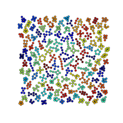
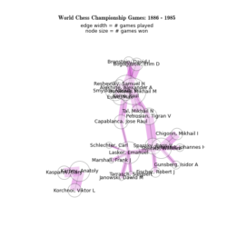
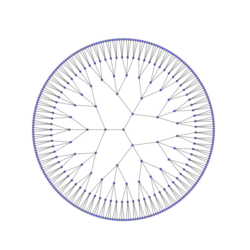
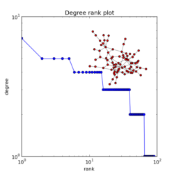
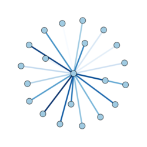
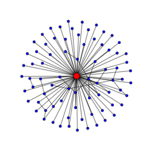
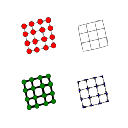
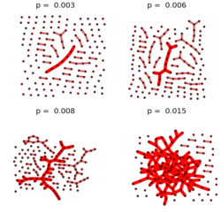
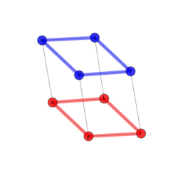
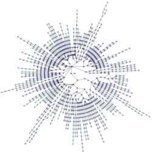
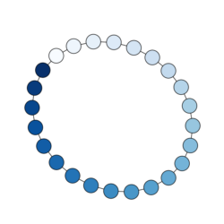
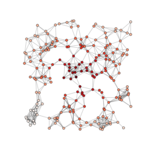
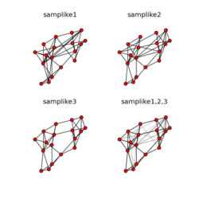
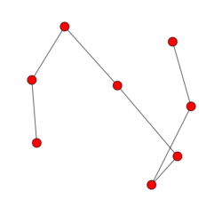
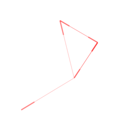
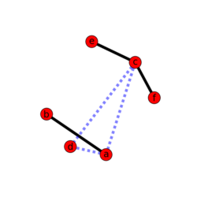

 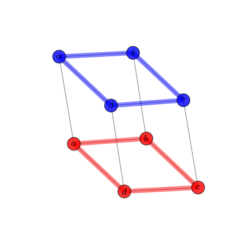
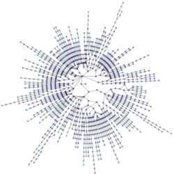
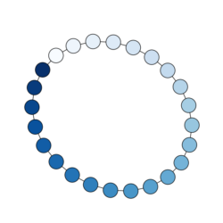
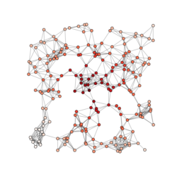
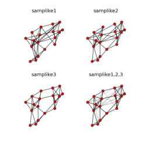
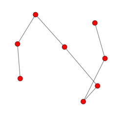
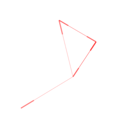
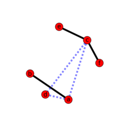
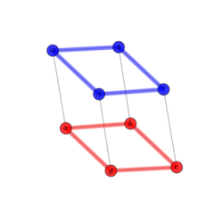
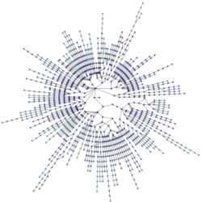
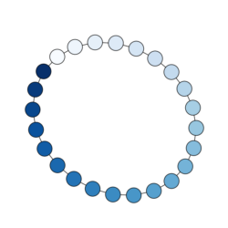
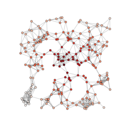
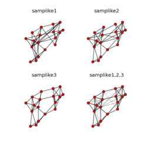
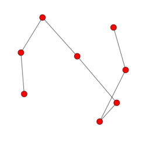
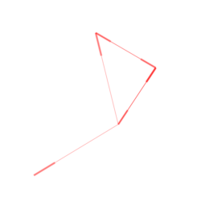
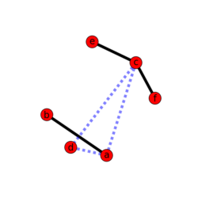